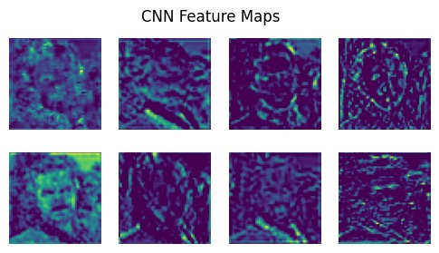
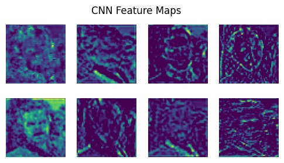

Abstract
The primary goal of this project is to develop an efficient face identification system that accurately classifies a given face image into one of K distinct classes. This problem holds significant importance in various real-world domains such as security, surveillance, and human-computer interaction.
A key application of this system is an automated attendance system, which we are actively developing. In this system, individuals' attendance is marked in real-time using face recognition, thereby eliminating manual entry, reducing errors, and enhancing both security and efficiency.
Our approach involves capturing facial images at entry points, followed by preprocessing steps such as face detection, cropping, and resizing. We extract features using techniques like Local Binary Patterns (LBP), Histogram of Oriented Gradients (HoG), and deep features from Convolutional Neural Networks (CNN). These features are then used for classification against a pre-registered facial database.
The system leverages traditional machine learning models such as Support Vector Machines (SVM), Random Forests, and others, with extensive experimentation to compare their accuracy and efficiency.
Initially, we started with the Labeled Faces in the Wild (LFW) dataset, but due to its limited number of images per class, it was unsuitable for training robust classification models. Therefore, we transitioned to a curated subset of the VGGFace2 dataset, which provides a higher number of images per individual and greater variability in pose and lighting. Specifically, we selected 50 classes with 300–350 images each, ensuring both scalability and computational feasibility.
The Problem

The Face Identification problem plays a vital role in various real-world applications such as security and automated attendance. A user may wish to verify their identity or mark attendance using a captured face image; however, factors like lighting, pose, and facial expressions introduce significant variability in the input. For example, a person entering a controlled area might present their face at an angle or under poor lighting conditions compared to their reference image. Therefore, the system must effectively handle such variations using advanced feature extraction methods like Histogram of Oriented Gradients (HoG), Local Binary Patterns (LBP), and Convolutional Neural Networks (CNN), along with robust machine learning models to ensure accurate identification despite these challenges.
Short Talk
Team
Contact
For questions, please contact Sandeep Soni or raise an issue on GitHub.